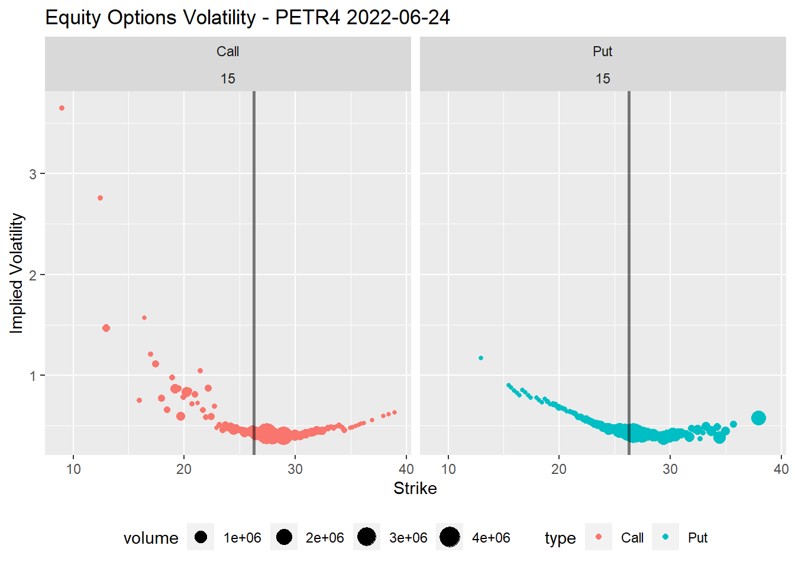

Um dos super datasets do pacote {rb3} é o de opções de ações. Com este dataset é possível realizar diversos cálculos com dados de opções de ações, como calcular a volatilidade implícita das opções, as gregas e até mesmo fazer o ajuste de modelos teóricos.
Author
Wilson Freitas
Published
June 24, 2022
Dados de opções de ações finalmente disponíveis de forma simples e direta. Durante muito tempo busquei isso, os dados de opções são mais chatos pois precisam de outros dados para a realização dos cálculos. Ter apenas os dados de prêmio das opções (preços das opções) não permite que diversas das medidas de interesse associadas a opções, como as gregas e a volatilidade implícita, sejam calculadas. Utilizando Black & Scholes é necessário ainda ter o preço do ativo objeto (preço da ação) e as taxas de juros. Com estas informações é possível calcular a volatilidade e a partir daí todas as demais medidas de interesse podem ser calculadas.
Vou mostrar aqui como calcular a volatilidade e as gregas para opções a partir de dados obtidos com o pacote {rb3}. Para realizar os cálculos com as opções eu utilizo o pacote {oplib} que desenvolvi com diversos modelos implementados:
Black, Scholes & Merto para apreçamento das opções
Black para apreçamento de opções sobre futuros, utilizado em opções sobre índices de taxas de juros, como IDI
Corrado-Su para o apreçamento de opções considerando assimetria e curtose
entre outros
Este pacote ainda é experimental, não está publicado no CRAN e a documentação ainda está em desenvolvimento.
Vamos começar carregando os pacotes
library(rb3)library(bizdays)
Attaching package: 'bizdays'
The following object is masked from 'package:stats':
offset
Vamos selecionar o último dia útil para obter os dados diários do arquivo COTAHIST disponibilizado pela B3. O arquivo COTAHIST traz diversas informações do mercado de ações e inclui as opções. Adicionalmente, precisamos das taxas de juros e utilizo a função rb3::yc_get para obter a curva de juros para a data de referência.
Com os dados de ações e opções, pelo arquivo COTAHIST, e com as taxas de juros, utilizo a função rb3::cotahist_options_by_symbol_superset para obter os dados de opções para um símbolo específico. Aqui vou utilizar PETR4 que é uma das ações com maior volume de negociação na bolsa.
No data.frame op1 temos informações de preço da ação na data de referência, preços das opções, taxas de juros, vencimento das opções, volumes de negociação e diversas outras informações.
para simplificar os cálculos vou separar duas informações úteis, os vencimentos das opções e o preço de fechamento da ação, que é único para a data de referência. Os vencimentos das opções são ordenados para que eu possa facilmente selecionar um vencimento desejado.
As opções de ações, tipicamente, possuem maior liquidez no primeiro vencimento disponível. Por isso, vou selecionar todas as opções com maturity_date == maturities[1].
Após a seleção das opções, uma série de cálculos são realizados para obter:
dias úteis até o vencimento biz_days
prazo em anos até o vencimento time_to_maturity
taxas de juros em capitalização contínua rate
volatilidade implícita impvol com o modelo Black & Scholes
a grega delta para o modelo Black & Scholes
Em seguida algumas variáveis são selecionadas para a visualizção dos dados.
Vamos visualizar o smile de volatilidade para com os preços de exercício das opções no eixo X Coloco uma linha vertical marcando o nível do preço do ativo objeto, facilitando a interpretação do que está dentro/fora do dinheiro para as opções de compra e venda (Calls e Puts). O tamanho de cada ponto é definido pelo volumen de negociação de cada opção. Interessante notar que os maiores volumes ficam nos strikes próximos do preço atual do ativo objeto. Estas são as opções ATM, no dinheiro.
Warning: Using `size` aesthetic for lines was deprecated in ggplot2 3.4.0.
ℹ Please use `linewidth` instead.

Abaixo temos o smile de volatilidade com o delta das opções no eixo X. Aqui fica mais fácil visualizar as opções ATM, pois estas tem delta de 0.5 (ou -0.5 no caso das Puts).